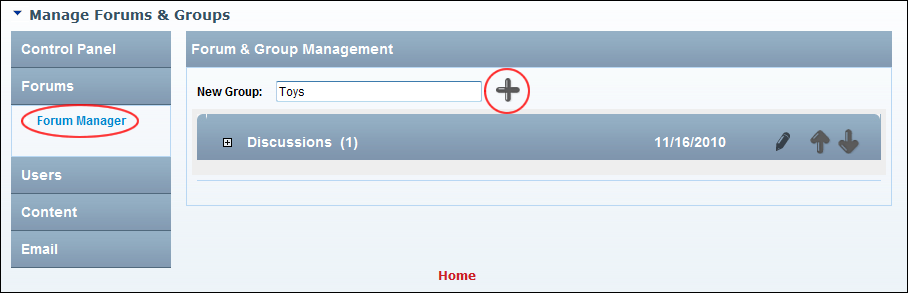

How to add a new forum group to the Forum module. A forum group is like a category which enable you to organize forums into one or more groups. Users cannot actually post to a forum group, but rather to the forums within that group. Once you have created a forum group, one or more forums must be added to it. A forum group called Discussions which contains a forum called General is created by default.

Adding a Forum Group